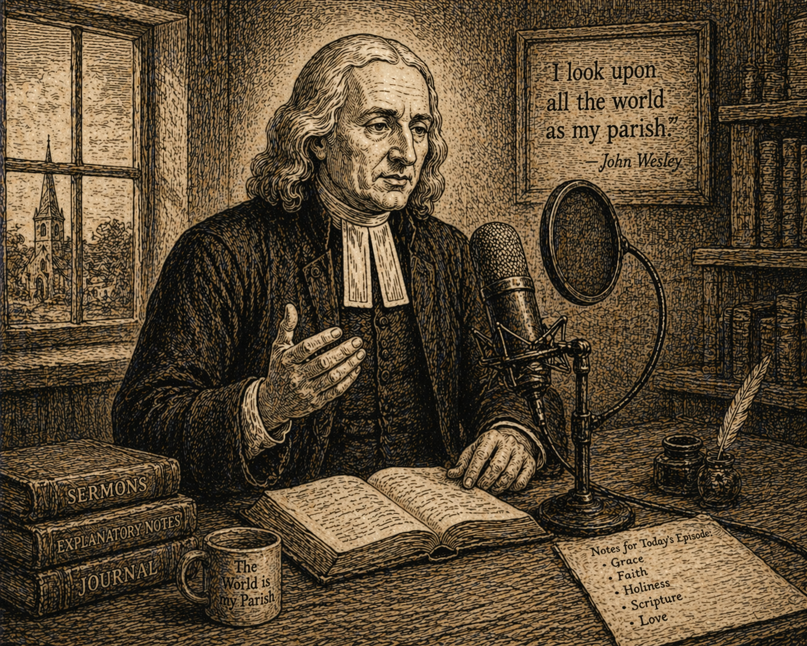

Проповідь 113 - Різниця між життям вірою і життя тим, що бачимо
Переклад проповіді "The Difference Between Walking By Sight, And Walking By Faith".
Проповідь 113 - Різниця між життям вірою і життя тим, що бачимо

30 грудня 1788
Різниця між життям вірою і життя тим, що бачимо
«Бо ми ходимо вірою, а не видінням» (2 Кор. 5:7).
-
Який же короткий цей опис справжніх християн, і водночас який він повний! У ньому зібрано весь досвід тих, хто справді є Божими людьми, від тієї миті, коли вони народжуються від Бога, і аж до того часу, коли переходять на лоно Авраамове. Бо хто це «ми», про яких тут сказано? Це всі справжні християнські віруючі. Саме християнські, а не юдейські. Це всі, хто є не лише Божими слугами, але й Його дітьми. Усі, хто має «Духа всиновлення, що кличе в їхніх серцях: Авва, Отче!». Усі, в кому «Дух Божий свідчить разом із їхнім духом, що вони — діти Божі».
-
Саме такі люди, і тільки вони, можуть сказати: «Ми ходимо вірою, а не видінням». Але перш ніж людина зможе так ходити, вона повинна спершу так жити, тобто жити вірою, а не тим, що бачить очима. І до всіх справжніх християн наш Господь говорить: «Бо Я живу — і ви жити будете». Це життя, якого світ не розуміє, чи то вчений, чи невчений. «Вас, що були мертві через переступи й гріхи, Він оживив», давши вам нове життя. Він дав вам нові чуття, духовні чуття, «чуття, привчені розрізняти добро і зло» в духовному значенні.
-
Щоб належно зрозуміти цю важливу істину, треба розглянути це питання в повному обсязі. Усі люди, які ще не народжені від Бога, живуть тим, що можна сприйняти чуттями, бо не мають вищого внутрішнього начала. Коли сказано, що вони живуть «видимим», то мається на увазі все чуттєве загалом. Тут зір узято замість усіх чуттів, і це доречно, бо саме зір є найвищим і найширшим з них. Трьома нижчими чуттями, смаком, нюхом і дотиком, ми можемо пізнати лише небагато речей; і жодне з них не сприймає предмета, якщо той не наблизити впритул. Слух, правда, має ширшу дію і дає нам знання про те, що є на певній відстані. Але що таке навіть п’ятдесят чи сто миль у порівнянні з відстанню від землі до сонця? А що й ця відстань у порівнянні з віддаллю між сонцем, місяцем і нерухомими зорями? І все ж саме зір постійно дає нам знання про предмети навіть на таких величезних відстанях.
-
Зір дає нам знання про видимий світ — від самої поверхні землі і аж до сфери нерухомих зір. Але що таке цей видимий для нас світ у порівнянні з усім всесвітом? Лише мала частка творіння. Порівняно з тим невидимим світом, тією частиною творіння, якої ми зовсім не бачимо через її віддаленість, він майже ніщо. Через обмеженість наших чуттів нам там здається порожнеча, хоча насправді це лише межа нашого бачення.
-
Але крім тих незліченних речей, яких ми не бачимо через їхню велику віддаленість, хіба не маємо підстав думати, що існує ще безліч інших, настільки тонких за своєю природою, що жодне з наших чуттів не може їх сприйняти? Хіба всі неупереджені люди не погодяться, що існує невидимий світ, так само реально, як і видимий? Але яке з наших чуттів настільки тонке, щоб відчути бодай щось із нього? Ми не можемо побачити жодної його частини так само, як не можемо доторкнутися до неї. Навіть якщо погодитися зі стародавнім поетом, що
«Мільйони духів по землі блукають,
Невидимі, коли ми спимо й коли не спимо»,
і навіть якщо визнати, що Великий Дух, Отець усього, наповнює небо і землю, то й тоді навіть найтонше з наших чуттів зовсім не здатне сприйняти ні Його, ні їх.
-
Усі наші зовнішні чуття, очевидно, пристосовані до цього зовнішнього, видимого світу. Вони дані нам лише на той час, поки ми живемо тут, у цих «глиняних оселях». Вони не здатні сприймати невидимий світ, бо не для цього були створені. Так само вони не можуть дати нам знання і про вічний світ, як не можуть дати його про світ невидимий, хоча в існуванні вічного світу ми певні не менше, ніж у існуванні будь-чого в теперішньому житті. Ми не можемо думати, що смерть кладе край нашому буттю. Тіло справді повертається в порох, але душа, маючи вищу природу, не знищується разом із ним. Отже, існує вічний світ, яким би він не був. Але як нам пізнати його? Що допоможе нам відсунути завісу, «що висить між смертним і безсмертним буттям»? Усі ми знаємо, що «перед нами простягається безмежний, неосяжний простір». Але нам не обов’язково додавати: «Та, на жаль, він укритий хмарами й темрявою».
-
Навіть найдосконаліші з наших чуттів тут безсилі. Та чим тут може допомогти наш так прославлений розум? Сьогодні загальновизнано: Nihil est in intellectu, quod non fuit prius in sensu, тобто «у розумі немає нічого, чого спершу не було б у чуттєвому сприйнятті». Отже, коли чуття тут не дають матеріалу, то й розуму немає з чим працювати, а тому й він не може нам допомогти. Тож, попри все, що ми можемо дізнатися через чуття або через розум, і невидимий, і вічний світи залишаються невідомими для всіх, хто живе лише тим, що бачить.
-
Чи ж зовсім немає ніякої допомоги? Невже люди мусять залишатися в повній темряві щодо невидимого й вічного світів? Ми не можемо так сказати. Навіть язичники не всі були цілком у темряві щодо цього. У всі часи і серед усіх народів крізь темряву пробивалися хоч деякі промені світла. Вони мали певне знання про невидимий світ із різних джерел. «Небеса звіщали славу Божу», хоч і не для тілесного ока; «твердь» відкривала для їхнього розуму, що є Творець. Дивлячись на творіння, вони доходили висновку, що є Творець, могутній і мудрий, праведний і милостивий. А з цього вони робили ще один висновок: що мусить існувати і вічний світ, тобто майбутній стан після теперішнього життя, де Божа справедливість у покаранні нечестивих і Його милість у нагороді праведних буде ясно й безсумнівно виявлена перед усіма розумними істотами.
-
Ми також маємо підстави думати, що деяке знання про невидимий і вічний світи передавалося від Ноя та його синів і їхнім близьким, і далеким нащадкам. І хоч ці відомості з часом затьмарилися й були спотворені безліччю вигадок, у них усе ж лишалося щось правдиве. Ці слабкі промені світла не дозволяли темряві стати цілковитою. До цього додаймо ще й те, що Бог ніколи, ні в який час і ні в якому народі, не «залишав Себе без свідчення» в людських серцях. Посилаючи «дощі та врожайні часи», Він давав людям і певне, хоч недосконале, пізнання Себе як Подателя всіх благ. Бо Він є «правдиве Світло, що просвічує кожну людину, яка приходить у світ», і в певній мірі робить це й досі.
-
Та всі ці джерела світла разом давали не більше, ніж тьмяний відблиск. Вони не могли дати навіть найосвіченішим людям справжньої певности, ясного доказу чи твердого переконання щодо невидимого або вічного світу. Наш поет, який поєднував філософію з поезією, недаремно називає Сократа «наймудрішим з усіх моральних людей», тобто з усіх тих, хто не мав Божого Одкровення. Але яке ж свідчення про майбутній світ мав він, коли звернувся до тих, хто засудив його на смерть: «А тепер, о судді, ви йдете жити, а я йду помирати. Що з цього краще, знає Бог; а я думаю, що цього не знає жодна людина». Яке ж це промовисте зізнання. Невже це було все світло, яке мав бідний Сократ перед смертю щодо невидимого чи вічного світу? І все ж навіть це було більше, ніж світло великого й доброго імператора Адріана. Пригадайте, ви, сучасні язичники, його зворушливе звернення до власної душі, що відлітала. Щоб не обтяжувати вас латинським оригіналом, подаю це в прекрасному перекладі Прайора:
«Маленька, ніжна, люба душе,
невже нам більше не бути разом?
Невже ти, тремтячи, готуєш крила,
щоб полетіти, сама не знаючи куди?
Твої веселі дотепи, твій милий норов,
усе полишене, усе забуте.
І ось тепер, задумлива, непевна, сумна,
ти і сподіваєшся, і боїшся, сама не знаючи чого».
-
«Не знаєш чого!» — і це правда: люди не мали певного знання, на що сподіватися або чого боятися після смерті, аж доки не зійшло «Сонце праведності», щоб розвіяти їхні марні здогади і через Євангеліє відкрити «життя і безсмертя», тобто безсмертне життя. Саме тоді, і не раніше, хіба що в окремих випадках, Бог відкрив людям невидимий світ і зняв із нього покрив. Тоді Він об’явив Себе синам людським. Отець відкрив у їхніх серцях Сина, а Син відкрив їм Отця. І Той, Хто колись наказав світлу засяяти з темряви, засяяв у їхніх серцях і просвітив їх пізнанням Божої слави в обличчі Ісуса Христа.
-
Саме там, де чуття вже безсилі, нам на допомогу приходить віра. Вона і є тим великим, чого нам бракувало. Вона робить те, чого не може зробити жодне чуття, навіть за допомогою всіх тих засобів, які створило людське мистецтво. Усі наші прилади, хоч би як їх удосконалювали вміння і праця багатьох поколінь, не можуть дати нам навіть найменшого відкриття в тих невідомих краях. Вони служать лише тим потребам, для яких були створені, тобто для цього видимого світу.
-
Якою ж іншою є доля і яка велика перевага в тих, хто «ходить вірою». Коли Бог «просвітлює очі їхнього розуму», Він вливає в їхню душу божественне світло, і через нього вони можуть «бачити Невидимого», тобто пізнавати Бога й Божі речі. Те, «чого око не бачило, і вухо не чуло, і що на серце людині не приходило», Бог знову й знову відкриває їм через «помазання від Святого», яке навчає їх усього. Увійшовши «у Святеє Святих Кров’ю Ісуса», «новою і живою дорогою», і будучи з’єднаними з «торжествуючим зібранням і Церквою первородних, і з Богом — Суддею всіх, і з Ісусом — Посередником Нового Заповіту», кожен із них може сказати: «І живу вже не я, а Христос проживає в мені» (Гал. 2:20). Тепер я живу тим життям, яке «сховане з Христом у Бозі»; і «коли з’явиться Христос, життя моє, тоді й я з’явлюся з Ним у славі».
-
Ті, хто живе вірою, так само і ходять вірою. А що це означає? Це означає, що вони судять про добро і зло не за тим, що видно тепер і що належить лише до цього часу, а за тим, що невидиме і вічне. Видиме вони вважають маловартісним, бо воно минає, мов сон. А невидиме вважають справді цінним, бо воно не минає ніколи. Усе невидиме є вічним. Те, чого не видно, не підлягає тлінню. Саме тому апостол і каже: «Бо видиме — дочасне, а невидиме — вічне». Через це ті, хто «ходять вірою», не прагнуть того, що видно. Це не є метою їхнього життя. Вони «думають про небесне, а не про земне». Вони дбають лише про небесне, де Христос сидить по правиці Божій. Вони знають, що все видиме є тимчасовим і швидко минає, мов тінь. Тому вони не спрямовують на нього свого серця, не жадають його і вважають його майже за ніщо. Натомість вони дивляться на невидиме, на те, що вічне і ніколи не минає. Саме цим вони міряють усе. Усе вони оцінюють як добре або зле залежно від того, чи допомагає це їхньому добру у вічності, чи шкодить йому. Вони судять про все, що з ними відбувається, за тим, як це позначиться на їхньому вічному житті. За цим самим правилом вони впорядковують усі свої почуття і прагнення, усі бажання, радощі й страхи. Так само вони спрямовують усі свої думки й наміри, усі слова та вчинки, щоб бути готовими до того невидимого і вічного світу, куди незабаром відійдуть. Вони не вважають, що живуть тут назавжди, а лише проходять цією землею. Вони не вважають землю своїм домом, а лише дорогою, якою йдуть
«через краї Еммануїлові
до кращих світів угорі».
-
Браття, чи належите ви до таких людей, ви, що тепер стоїте перед Богом? Чи бачите ви Його, хоч Він і невидимий? Чи маєте ви віру, живу віру, віру Божої дитини? Чи можете сказати: «Життя, яке я тепер живу, живу вірою в Сина Божого, Який полюбив мене і віддав Себе за мене»? Чи справді ви живете, керуючись вірою? Зверніть увагу, про що саме я питаю. Я не питаю, чи ви лихословите, чи клянетесь неправдиво, чи зневажаєте недільний день, чи живете в якомусь явному гріху. Я не питаю, чи ви робите добро, і чи відвідуєте всі Божі постанови. Навіть якщо зовні у всьому цьому ви бездоганні, я все ж питаю вас перед Богом: яким мірилом ви оцінюєте речі? За мірилом видимого світу чи невидимого? Поставимо питання прямо. Що для вас краще: щоб ваш син був побожним шевцем чи безбожним паном? Що для вас більш бажане: щоб ваша дочка була Божою дитиною і ходила пішки чи щоб була дитиною диявола і їздила в кареті, запряженій шістьма кіньми? Коли йдеться про заміжжя вашої дочки, якщо ви більше дбаєте про її тілесний добробут, ніж про її душу, то знайте: ви йдете дорогою до пекла, а не до неба. Бо тоді ви живете тим, що бачите, а не вірою. Я не питаю лише про зовнішні гріхи чи явні занедбання. Я питаю ось про що: чого ви шукаєте в загальному напрямі свого життя? Небесного чи земного? До чого схиляється ваше серце: до небесного чи до дочасного? Якщо до земного, то ви так само певно йдете шляхом погибелі, як і злодій або звичайний п’яниця. Любі мої, нехай кожен чоловік і кожна жінка між вами буде щирим із собою. Запитайте своє серце: «Чого я шукаю щодня? Чого бажаю? До чого прагну? До земного чи до небесного? До видимого чи до невидимого?» Що для вас є найголовнішим: Бог чи світ? Як живий Господь, якщо вашим серцем володіє світ, то вся ваша «релігія» досі є марною.
-
Тож, мої дорогі браття, віднині оберіть кращу частку. Нехай ваш погляд на все навколо буде правильним, відповідно до справжньої цінності речей, у світлі невидимого й вічного світу. Визнавайте вартим того, щоб шукати або уникати, лише те, що впливає на ваш вічний стан. Нехай ваші почуття, бажання, радість і надія будуть спрямовані не на те, що швидко минає, не на те, що щезає, мов тінь, і проходить, мов сон, а на те, що незмінне, нетлінне і нев’януче, на те, що залишиться тим самим навіть тоді, коли «небо й земля втечуть, і місця для них не знайдеться». Пильнуйте, щоб у всьому, що ви думаєте, говорите і робите, погляд вашої душі був простий і звернений до «Невидимого» та до «слави, яка має з’явитися». Тоді «все тіло ваше буде світле»: уся ваша душа буде втішатися світлом Божого обличчя, і ви постійно бачитимете сяйво славної Божої любові «в обличчі Ісуса Христа».
-
Особливо пильнуйте, щоб ваше бажання було звернене до Нього і до пам’яті Його Імені. Стережіться «безумних і шкідливих пожадань», тобто тих бажань, які народжуються від усього видимого й дочасного. Усі такі бажання святий Іван об’єднує під однією назвою: «любов світу» (1 Ів. 2:15). І це застереження він дає не стільки людям світу, скільки саме Божим дітям: «Не любіть світу, ані того, що в світі». Не давайте місця «пожадливості плоті», тобто потягові догоджати зовнішнім чуттям, чи то смакові, чи будь-якому іншому. Не давайте місця «пожадливості очей», тобто потягові уяви, коли вона тішиться тим, що велике, гарне або незвичайне. Не давайте місця «гордості життєвій», тобто бажанню мати багатство, пишність або «славу, що від людей».
Святий Іван підкріплює це застереження тією ж думкою, яку святий Павло висловлює коринтянам: «Минається і світ, і його пожадливість» (1 Ів. 2:17). «Бо все, що в світі», тобто все світське: його речі, справи, утіхи, турботи, усе, що тепер так привертає нашу увагу, уже минає, вже відходить і не повернеться знову. Тому не прагніть жодної з цих тлінних речей, а шукайте тієї слави, яка «перебуває повік».
-
Добре зважте: ось у чому полягає релігія, і ні в чому іншому. Саме це і є справжня християнська релігія. Вона не зводиться до тих чи інших переконань, не є просто системою поглядів, хоч би якими правдивими і біблійними вони були. Щоправда, це часто називають вірою. Але ті, хто вважає саму лише правильну думку всією релігією, тяжко помиляються. А якщо ще й думають, що цього досить для входу в небо, то насправді вони йдуть широкою дорогою до погибелі. Добре запам’ятайте: релігія — це не просто «нешкідливість», яку один уважний знавець людської природи влучно назвав «пекельною нешкідливістю», бо вона веде тисячі в безодню. Це також не просто моральність, хоч вона і є прекрасною річчю, коли виростає з правильної основи — віри, що діє любов’ю. Але якщо вона має іншу основу, то перед Богом не має жодної вартості. Це і не зовнішня формальність, навіть не найточніше виконання всіх Божих постанов. Бо й це, якщо не має правильної основи, не є приємним Богові більше, ніж «відсікання собаці шиї». Ні. Релігія — це не менше, ніж жити вже тепер у світлі вічності та ходити, пам’ятаючи про вічність. А тому — жити в любові до Бога і до людей, у покорі, лагідності та підкоренні своєї волі Богові. Ось що є релігією, і тільки це. Саме це і є те «життя, сховане з Христом у Бозі». Лише той, хто так живе, «перебуває в Бозі, і Бог — у ньому». Лише це означає справді віддати Христові належну честь і чинити «волю Його на землі, як на небі».
-
Легко побачити, що саме це люди світу називають «ентузіазмом». Це слово дуже зручне для їхньої мети, бо майже ніхто не може точно пояснити ні його змісту, ні навіть походження. А якщо й надавати йому якесь певне значення, то воно означає своєрідне релігійне безумство. Тому, щойно ви починаєте свідчити про свій досвід, вони одразу вигукують: «Велика віра довела вас до божевілля!» І все, що ви переживаєте з невидимого чи вічного світу, вони вважають лише очевидними мріями розпаленої уяви. Інакше й бути не може, коли люди, сліпі від народження, беруться міркувати про світло й барви. Вони легко назвуть божевільними тих, хто говорить про речі, про які вони самі не мають жодного поняття.
-
Із усього сказаного стає цілком ясно, що насправді являє собою те модне життя, яке називають «дисипацією», тобто життя в постійних розвагах. Хто має вуха, нехай слухає. Це сама сутність безбожності, і не просто тієї, що природно живе в людині, а такої, яку ще й свідомо підсилюють і навмисно в собі вирощують. Це мистецтво забувати Бога, жити так, ніби Його зовсім немає, бути справді «без Бога у світі». Це мистецтво усувати Його, якщо вже не зі світу, який Він створив, то принаймні з думок усіх Його розумних створінь. Це свідоме й постійне відвертання уваги від усього невидимого й вічного, а особливо до смерті, цієї брами вічності, і до тих великих наслідків, що настають після смерті, до неба та пекла!
-
Ось чим насправді є дисипація. І чи справді вона така «нешкідлива», як зазвичай думають? Це одне з найнебезпечніших знарядь для загибелі безсмертних душ, яке будь-коли було викуване в арсеналах пекла. Через неї до безодні вічного вогню, приготованого дияволові та його ангелам, було вкинуто незліченну кількість душ, які могли б радіти у славі Божій. Вона одним ударом знищує всяку релігію і зводить людину до рівня худоби, що гине. Усі ви, хто боїться Бога, тікайте від дисипації! Уникайте її і нехай навіть сама її назва буде вам огидною! Пильнуйте, щоб Бог був у всіх ваших думках, і щоб вічність завжди стояла перед вашими очима! Постійно дивіться не на видиме, а на невидиме. Нехай ваші серця будуть утверджені там, «де Христос сидить праворуч Бога», щоб коли Він покличе вас, «вам був щедро відкритий вхід до Його вічного Царства!»
Лондон, 30 грудня 1788 р.